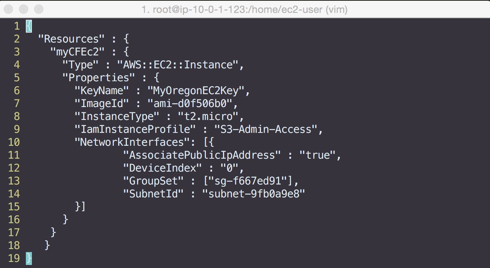
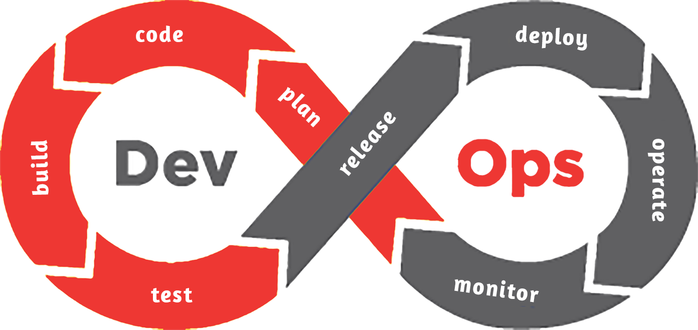

Melhore seus processos, sua infraestrutura, não se repetindo
Totalmente em Open Source, zero R$ em licenças.
Trabalhe mais com menos esforço, chega de tarefas repetitivas.

Serviços
Podemos te ajudar em algumas áreas de sua infraestrutura para entregar melhor seu software ou ainda, agilizar suas tarefas repetitivas dentro da infraestrutura.
O que fazemos não é nada diferente de montar um lego, porém as peças aqui requerem um pouco mais de estudo para o foco que você quer atingir.
Usamos ferramentas Open Source, onde há vasta documentação através da internet para você mesmo realizar os objetivos da sua empresa.



Infra ágil
Estamos vivendo no mundo onde a infraestrutura "normal" está aos poucos sendo sugada por processos ágeis. Criar servidores "na mão" não é mais um caminho adequado, por repetição de tarefas e erros humanos. Temos que dar poder aos desenvolvedores e demais usuários a criarem seus recursos de forma simples e organizada.
Acreditamos que podemos chegar nesta nova era apresentando a você ferramentas que podem automatizar seus processos e mostrar como fazer parte de uma nova cultura que vem cada vez sendo fomentada por SRE (Site Reliability Engineer) e DevOps.
Utilizamos ferramentas de mercado Open Source que são renomadas por grandes players mundiais, como Google, Amazon, Netflix e até Microsoft.
Containers com Docker
Docker foi anunciado em 2013 e em pouco tempo já conseguiu adotar um grande público por sua premissa, que é ter todo o seu software padronizado em uma "caixar", que neste contexto entra como sendo containers.
Com Docker podemos rodar múltiplos aplicativos com um mesmo Kernel, isso nos possibilita evitar overhead the bibliotecas e demais partes que teríamos em um ambiente como um VMware, onde os recursos seriam em grande parte disperdiçados.
Docker pode operar de várias formas, para isso deve-se conhecer qual a sua necessidade antes de implementar uma solução. Em alguns casos apenas um container resolve seu problema com ambientes padronizados, outras vezes a solução pode aumentar para um cluster


Puppet
Puppet foi criado para gerenciar sistemas Unix-like e sistemas Microsoft Windows declarativamente. Você escreve os recursos do sistema o seu estado usando a linguagem delarativa do Puppet. Esta informação é guardada em arquivos que são chamadas de "Puppet manifests".
Puppet descobre as informações do sistema via uma ferramenta chamada "Facter" e compila esses manifestos em um catálogo contendo os recursos e suas dependências que serão aplicados contra os sistemas em questão.
Qual o motivo de automatizar?
É pelo tempo? pelo dinheiro? ou tarefas repetitivas? ou tudo ao mesmo tempo?
Automação de infraestrutura também é conhecida algumas vezes por outros nomes, que em alguns momentos tudo vira um "grande bolo" de nomes, vejamos alguns: Gerência de configuração, gerenciamento de configuração de sistemas, gerenciamento de TI, provisionamento, scripts de infraestrutura e assim continua por vários outros nomes que podemos encontrar no mercado.
Mas no fim das contas, é quase que tudo a mesma coisa, pois a ideia é evitar o erro, gerenciar tempo, dinheiro, diminuir a repetição e etc. Com automação de infraestrutura nós teremos agilidade tanto em desenvolvimento como na parte de operações, pois qualquer time (com suas devidas autorizações) poderá modificar scripts/templates/classes desde que aplicado as boas práticas de desenvolvimento.
Automatizando a implementação e gerenciamento dos ambientes, reduz-se os riscos de erros de execução, além de garantir a padronização. Seguindo a premissa de que nada será modificado em produção a menos que seja através de um script (manifest, playbook, scripts em python, etc) que estará versionado e faz parte de um caminho único (pipeline de entrega) até chegar na produção, certamente sua gestão de TI será mais padronizada e menos sujeita a riscos.
Com sistemas de controle de versão como o GIT, é possível definir a infraestrutura como código da mesma forma que você faz com seus arquivos de software.